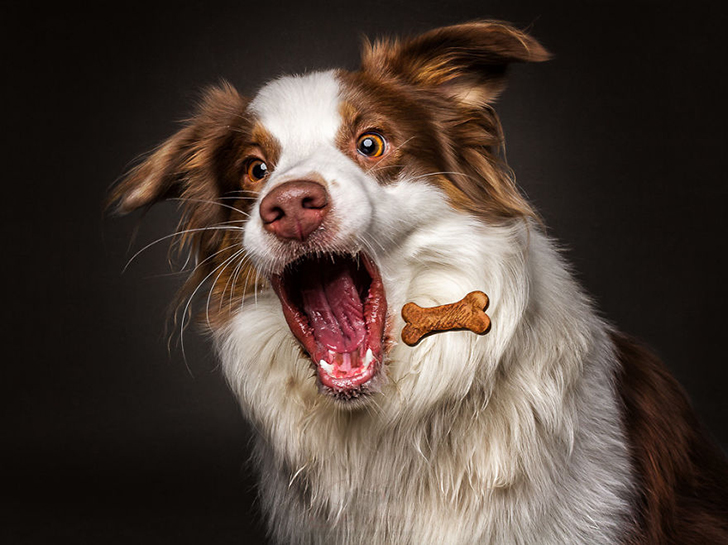
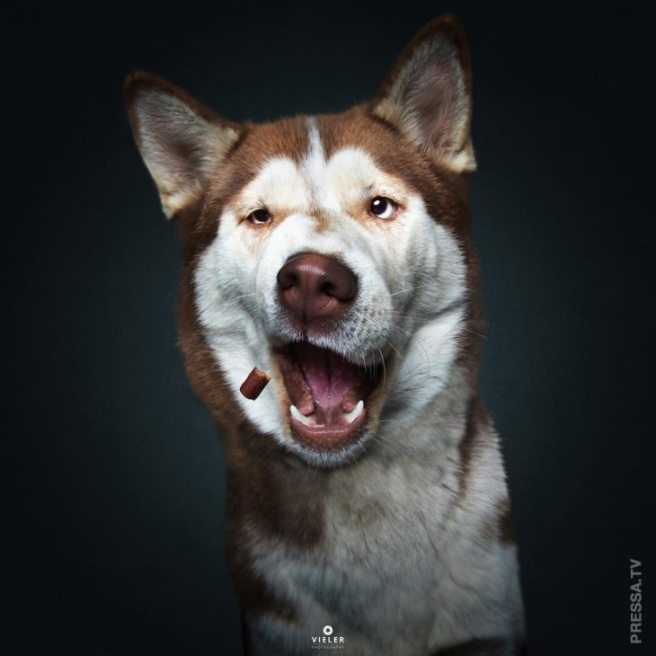
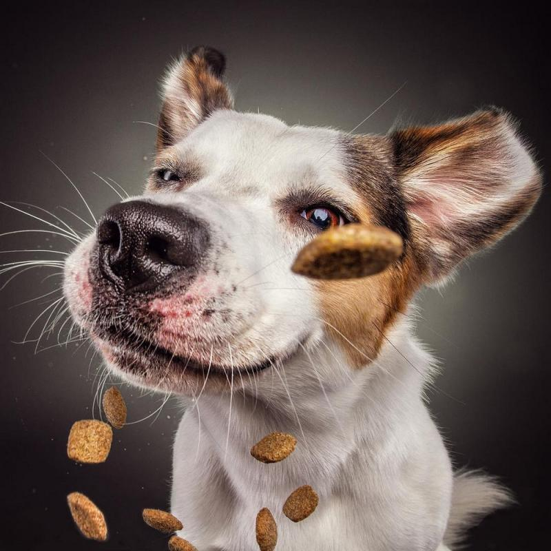
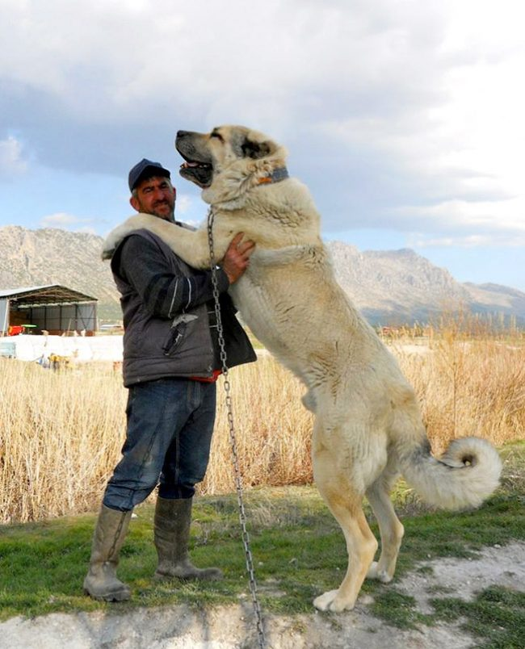

Цікаві факти про собак
1. Собаки здатні розрізняти кольори. Їх світ не є чорно-білим. Однак їх колірна гамма не така широка, як у людини. 2. У собак дуже розвинена здатність до сприйняття запахів. Вони відчувають аромати в тисячі разів краще людини.
3. Собаки - дуже гарячі тварини, середня температура тіла 38,3 -39,4. На жаль, ця температура комфортна для бліх, у зв'язку з чим важливо час від часу перевіряти вашого вихованця на наявність паразитів. 4. Шум грози часто викликає біль у вухах собаки. Якщо ви бачите, що ваш вихованець злякався грози, насправді це може бути реакція на біль у вухах.

5. Чи знаєте ви, що собаки не пітніють через шкіру? Їх піт виходить назовні через подушечки лап і швидке дихання. 6. Рівень інтелекту собаки такий же, як у дворічної дитини.
7. Собаки здатні запам'ятати понад 250 слів і жестів, вони можуть рахувати до 5 і вирішувати найпростіші математичні завдання. 7. Собаки не люблять, коли їх обіймають і гладять по голові - це вважається ознакою домінування. Якщо хочете приголубити собаку, погладьте їй бік. 8. У США розташована єдина у світі церква для собак. Її побудував в XIX столітті художник Стефан Ханеке в знак подяки своїм п'яти лабрадорам, які допомогли йому перемогти важку хворобу.9. Собачий сміх таке ж природне і часте явище, як і людський. Собаки сміються також, як люди, тільки замість «ха-ха» вони вимовляють «х-х». Найчастіше наші вихованці сміються під час гри та при зустрічі з господарем. 10. Шоколад є отрутою для собак. У ньому містяться речовини, які викликають ураження її центральної нервової системи. 11. Собаки можуть розрізняти ультразвуковий свист. Дізнавшись про це, Пол Маккартні вставив цей звук в одну з пісень спеціально для свого собаки.
 12. Першими собаками (у звичному для нас розумінні) були приручені вовки. 13. Собаки з довгим тілом та короткими лапами, такси, були виведені для полювання за борсуками. 14. Напевно, всі знають, що цуценята народжуються глухими та сліпими. Тому перше чуття, яке у них розвивається - це дотик. Все тіло чотириногих вихованців покрито нервовими закінченнями, що допомагають їм у цьому. 15. Цілих 18 видів різноманітних м'язів керують вухами собаки.